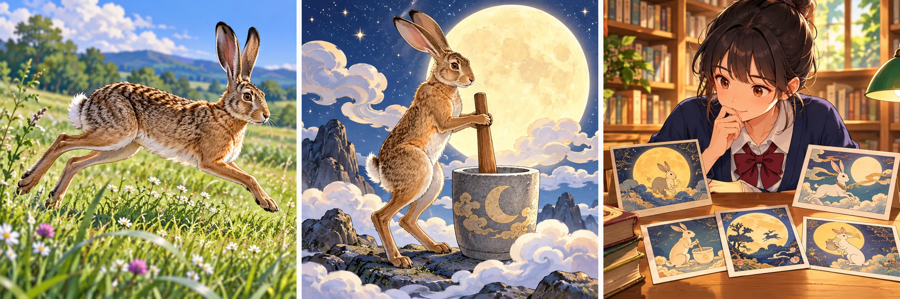
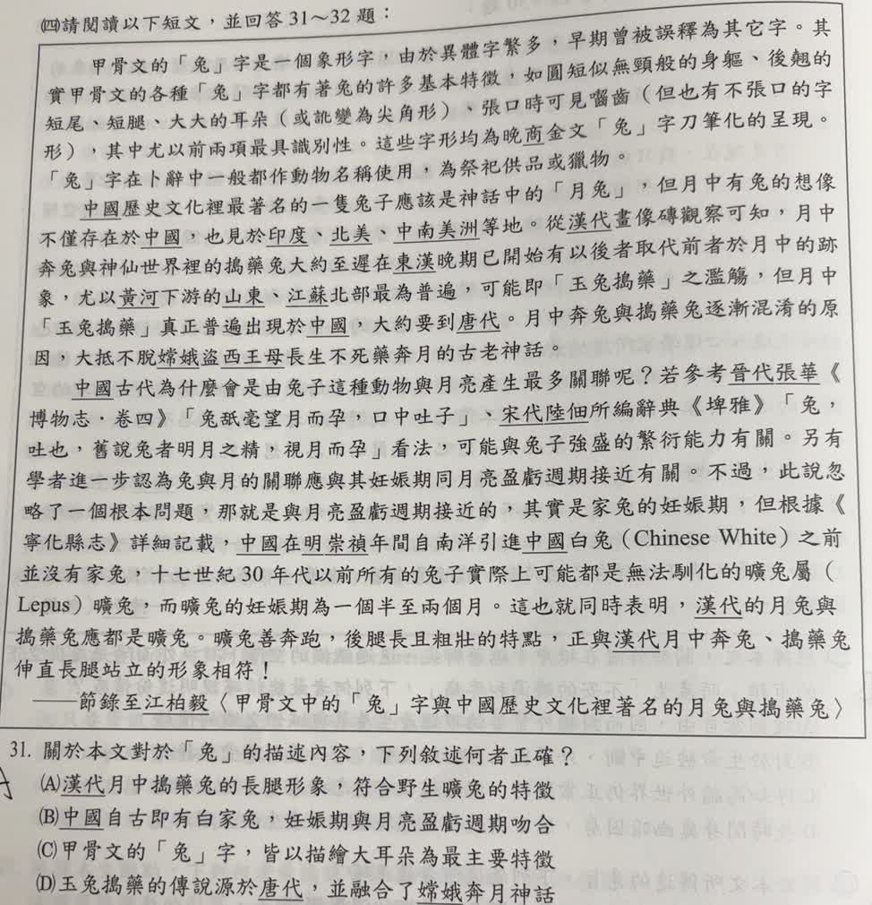

分享原卷｜第 31 題
完整原題
作答所需文章／材料
甲骨文的「兔」字是一個象形字，由於異體字繁多，早期曾被誤釋為其它字。其實甲骨文的各種「兔」字都有著兔的許多基本特徵，如圓短似無頸般的身軀、後翹的短尾、短腿、大大的耳朵（或訛變為尖角形）、張口時可見齒（但也有不張口的字形），其中尤以前兩項最具識別性。這些字形均為晚商金文「兔」字刀筆化的呈現。「兔」字在卜辭中一般都作動物名稱使用，為祭祀供品或獵物。 中國歷史文化裡最著名的一隻兔子應該是神話中的「月兔」，但月中有兔的想像不僅存在於中國，也見於印度、北美、中南美洲等地。從漢代畫像磚觀察可知，月中奔兔與神仙世界裡的搗藥兔大約至遲在東漢晚期已開始有以後者取代前者於月中的跡象，尤以黃河下游的山東、江蘇北部最為普遍，可能即「玉兔搗藥」之濫觴，但月中「玉兔搗藥」真正普遍出現於中國，大約要到唐代。月中奔兔與搗藥兔逐漸混淆的原因，大抵不脫嫦娥盜西王母長生不死藥奔月的古老神話。 中國古代為什麼會是由兔子這種動物與月亮產生最多關聯呢？若參考晉代張華《博物志・卷四》「兔舐毫望月而孕，口中吐子」、宋代陸佃所編辭典《埤雅》「兔，吐也，舊說兔者明月之精，視月而孕」看法，可能與兔子強盛的繁衍能力有關。另有學者進一步認為兔與月的關聯應與其妊娠期同月亮盈虧週期接近有關。不過，此說忽略了一個根本問題，那就是與月亮盈虧週期接近的，其實是家兔的妊娠期，但根據《寧化縣志》詳細記載，中國在明崇禎年間自南洋引進中國白兔（Chinese White）之前並沒有家兔，十七世紀30年代以前所有的兔子實際上可能都是無法馴化的曠兔屬（Lepus）曠兔，而曠兔的妊娠期為一個半至兩個月。這也就同時表明，漢代的月兔與搗藥兔應都是曠兔。曠兔善奔跑，後腿長且粗壯的特點，正與漢代月中奔兔、搗藥兔伸直長腿站立的形象相符！ ——節錄至江柏毅〈甲骨文中的「兔」字與中國歷史文化裡著名的月兔與搗藥兔〉關於本文對於「兔」的描述內容，下列敘述何者正確？
(A) 漢代月中搗藥兔的長腿形象，符合野生曠兔的特徵
(B) 中國自古即有家兔，妊娠期與月亮盈虧週期吻合
(C) 甲骨文的「兔」字，皆以描繪大耳朵為最主要特徵
(D) 玉兔搗藥的傳說源於唐代，並融合了嫦娥奔月神話
先想一想，再查看答案、解說與原圖
原卷作答：A
正確答案：A。文章最後以曠兔的長後腿特徵，對照漢代圖像中的長腿，兩者相符。
逐項解析
| 選項與原句 | 判讀 | 句意與判斷理由 |
|---|---|---|
| (A) 漢代月中搗藥兔的長腿形象，符合野生曠兔的特徵 | 應選 | 文章最後以曠兔的長後腿特徵，對照漢代圖像中的長腿，兩者相符。 |
| (B) 中國自古即有家兔，妊娠期與月亮盈虧週期吻合 | 不選 | 本文主張明崇禎年間才引入家兔，「自古即有」與本文不符。 |
| (C) 甲骨文的「兔」字，皆以描繪大耳朵為最主要特徵 | 不選 | 第一段說前兩項，即圓短似無頸的身軀、後翹短尾最具識別性，不是大耳朵。 |
| (D) 玉兔搗藥的傳說源於唐代，並融合了嫦娥奔月神話 | 不選 | 本文說唐代才普遍出現，並非到唐代才起源；東漢晚期已開始混合。 |
詳細說明與解題步驟
題目要求依本文核對。A可直接對照最後一段的「後腿長且粗壯」與「伸直長腿站立」。B把家兔引入時間提前；C把次要外觀改成最主要辨識特徵；D混淆「普遍出現」與「起源」。
文中有關兔種引入、繁殖與神話的敘述，是作者用來建構本文論點的材料；解題依文章所述比對，不把推測語氣「可能」「應」改成無例外的生物學定律。

① 本文曠兔的特徵：後腿長且粗壯
末段說曠兔善奔跑，後腿長且粗壯。作答時要找選項能否與文章描寫直接對照，不能只憑一般印象中的大耳朵或圓胖家兔判斷。
② 長腿站立的月兔形象，符合A
文章接著把這項特徵，與漢代月中奔兔、搗藥兔伸直長腿站立的形象相比，說兩者相符。A正是這段對照的重述，所以應選A。
③ 唐代普遍，不等於唐代才起源
本文說東漢晚期已有後者取代前者的跡象，大約唐代才普遍出現。D把普遍出現改成源於唐代，偷換了時間意義；不能把流行時點當成最初起源。
④ 依文比對長後腿，別把普遍當起源
答案 A：長腿形象與本文曠兔特徵相符
- B的自古有家兔，與本文引入家兔的說法不符。
- C：最具識別性的是圓短身軀、後翹短尾，不是大耳朵。
- 本文「可能」「應」等推測語氣要保留，不改成無例外定律。
核對註記：已核對題幹、全部選項與必要材料；教材對應課次未確認，歸綜合。
原圖（僅本題）
